Most Music Information Retrieval (MIR) research is built on Western music, leaving a significant gap for Egyptian genres like Mahraganat, Tarab, Shaabi, Egyptian Pop, and Egyptian Rap. No labeled dataset existed, no benchmark had been established, and state-of-the-art models trained on Western scales and rhythms are culturally blind to the maqam scales, tabla patterns, and mizmar timbres. This affects real applications like streaming platforms serving millions of Egyptian listeners who cannot accurately categorize or recommend local genres because their underlying models were never trained to tell them apart. Our project addresses this directly by building the first labeled Egyptian music genre dataset and adapting a pretrained audio model with culturally informed features.
We created the first labeled Egyptian music dataset consisting of 5 genres: Tarab/Classical (12.4%), Egyptian Pop (12.4%), Egyptian Rap (17.3%), Mahraganat (24.4%), and Shaabi (33.5%). Each example is a 30-second audio clip sourced from YouTube, with a maximum of 2 clips per song to prevent data leakage. The clips are each taken from different parts of the song to ensure diversity. We began with a balanced dataset with equal number of clips per genre, but once we began training and seeing the performance of the model we realized that some genres were more difficult to classify than others, so we collected additional clips for the harder classes (Mahraganat and Shaabi) to improve performance. The final dataset contains 804 clips, with a 70/15/15 train/val/test split stratified by genre. The distribution of examples per genre is shown below.
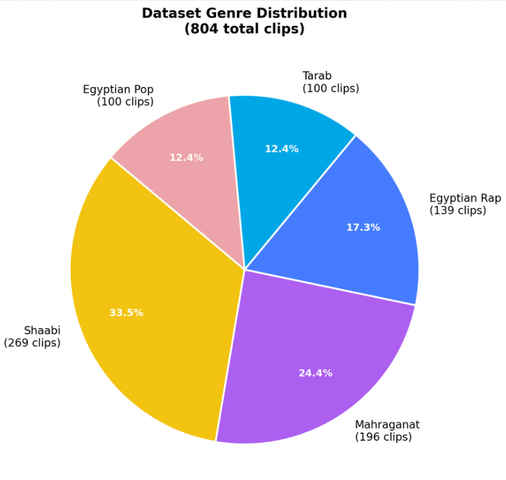
The input to our model is a 30-second .wav audio clip. No preprocessing is required from the user. Our pipeline converts the raw audio to a log-mel spectrogram, extracts handcrafted features, and feeds both into a dual-branch architecture for classification. The output is a predicted genre label (one of the five classes) along with a confidence score.
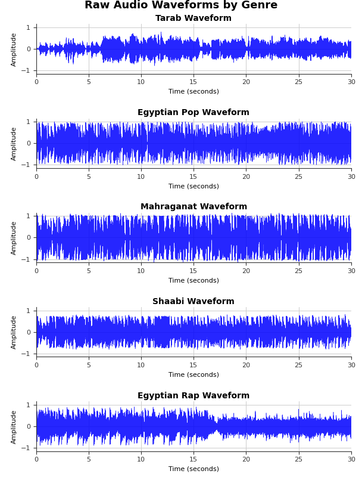
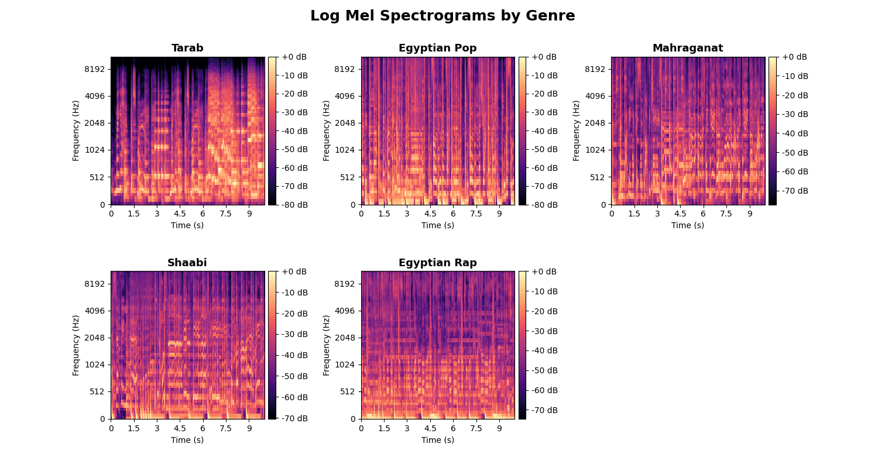
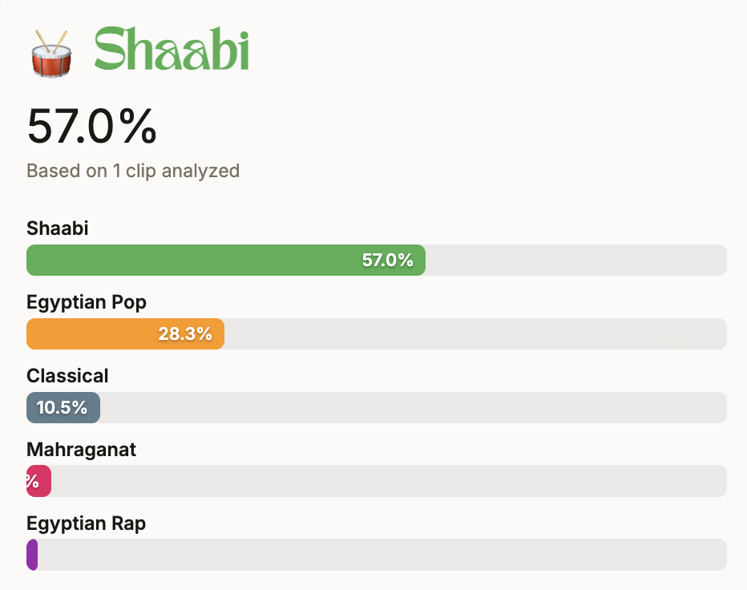
So after surveying the available models, we narrowed it down to four main models all tested on GTZAN. The simplest is PiczakCNN, which is a basic convolutional network that runs on spectrograms and it gets around 82% on GTZAN, decent but not great. Then there's CNN + LSTM, which combines a CNN for extracting audio features with an LSTM to capture patterns over time and that bumps performance up to about 90%. The third one is CNN14, also known as PANNs, which is a deep CNN that was pretrained on AudioSet, a massive Google dataset with over 2 million audio clips spanning 527 sound classes. It hits 91% on GTZAN. And finally, AST, the Audio Spectrogram Transformer, which is the best performer at 95.6%. Instead of convolutions, it treats the spectrogram like an image and processes it with a transformer.
We chose CNN14 as our base model because it has a good balance of performance and complexity, and the fact that it's pretrained on AudioSet means it has already learned a rich set of audio features that we can fine-tune for our specific task via transfer learning.
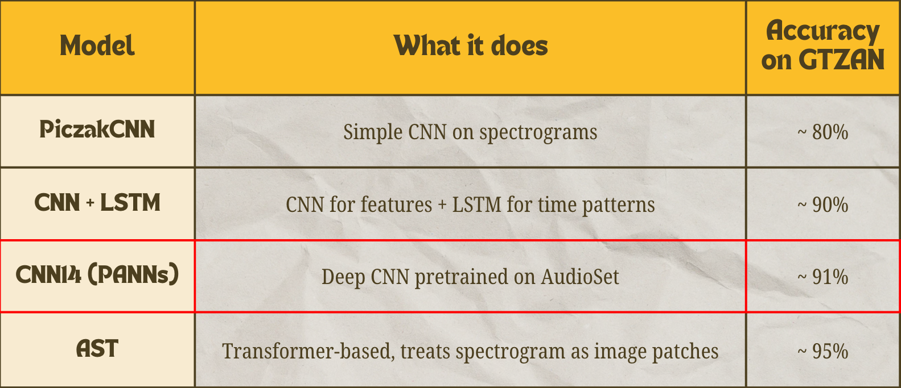
As we said, our chosen base model is the CNN14. First raw audio is converted to a log-mel spectrogram, passed through 6 convolutional blocks (each with two Conv 3x3 layers, BatchNorm, ReLU, and average pooling), then through global average+max pooling to produce a 2048-dimensional embedding, and finally through a fully-connected layer to 527 AudioSet classes. CNN14 avoids large intermediate FC layers, keeping the parameter count low while producing a rich output. When deploying this model without any tuning and just adapting the classification head, it achieves 69% accuracy (F1: 0.67).
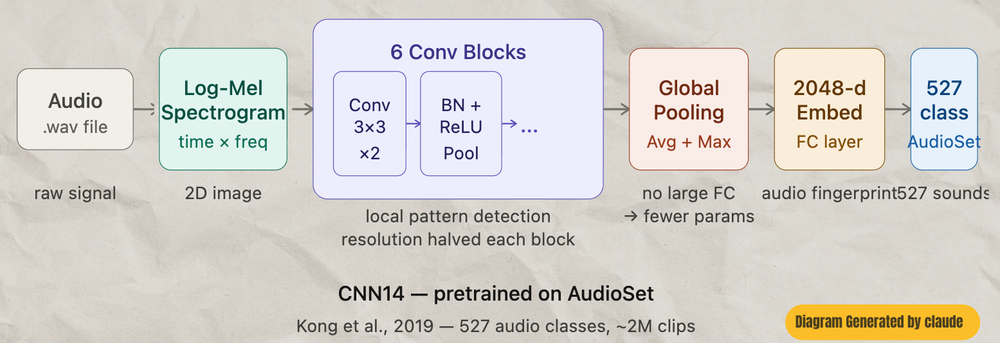
We progressively improved the baseline through four targeted updates. Models were trained with weight decay and early stopping for 80 epochs and optimized through 5-fold cross-validation.
We froze conv_blocks 1–3 to preserve low-level audio features (primitives) from AudioSet pretraining while allowing deeper blocks to re-specialize for Egyptian music. We also tuned learning rate, batch size, and weight decay, and introduced basic augmentation (pitch shifting, time stretching, noise injection). Result: 73% accuracy / 0.72 macro F1.
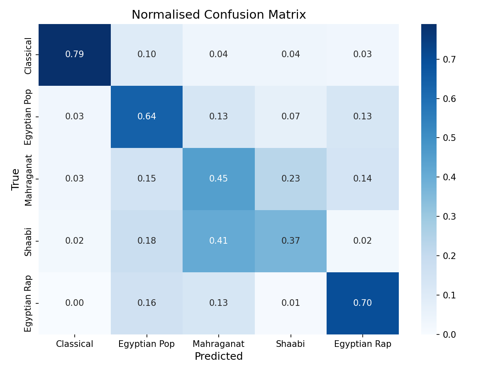
A parallel MLP branch processes 74 hand-crafted cultural acoustic features, 24 Chroma STFT coefficients, 40 MFCCs, 7 Spectral Contrast bands, and 1 ZCR, whose output is concatenated with the CNN's 2048-dim embedding before the classification head. A CBAM-style channel attention module inserted after conv_block6 focuses the model on the most discriminative acoustic channels per genre. SpecAugment and Mixup with a warmup scheduler were added to stabilize training. Result: 79% accuracy / 0.79 macro F1.
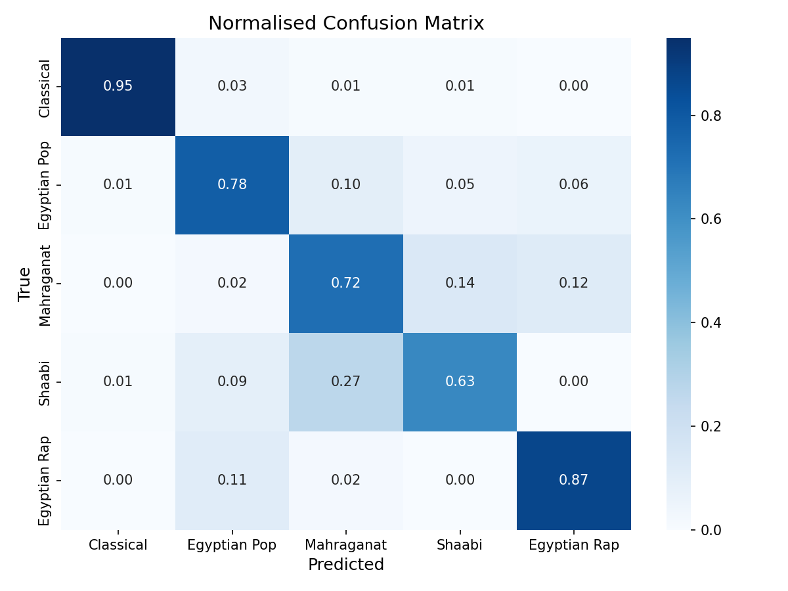
The complete pipeline was fine-tuned end-to-end with dropout regularization in the fusion head (BN + ReLU + Dropout 0.4), StandardScaler fitted per cross-validation fold on handcrafted features, and an expanded dataset with additional Shaabi and Mahraganat clips added since they were the most difficult to classify. Result: 93% accuracy / 0.94 macro F1, a 24-point improvement over baseline.
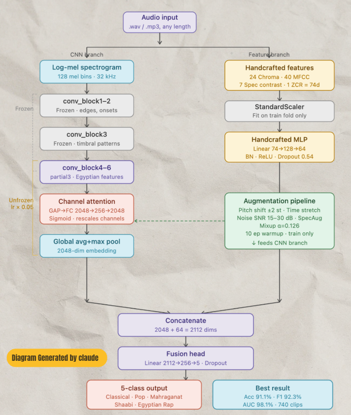
Grad-CAM was applied to the final convolutional block to interpret predictions. The heatmaps confirmed the model learned acoustically meaningful patterns per genre and traced the remaining Mahraganat/Shaabi confusion to a shared low-frequency overlap between tabla and electronic kick. Below are Grad-CAM visualizations for each of the five genres, followed by a side-by-side comparison of the most commonly misclassified examples.
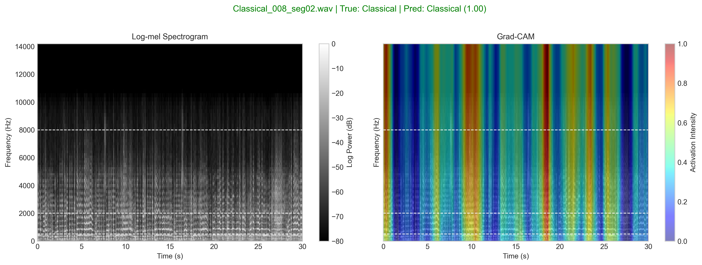
Tarab / Classical
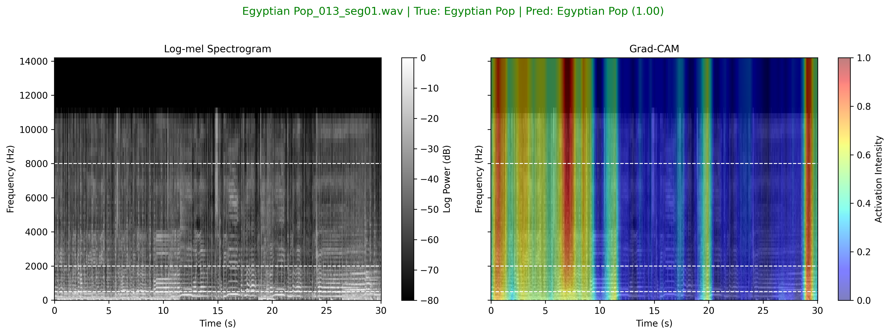
Egyptian Pop
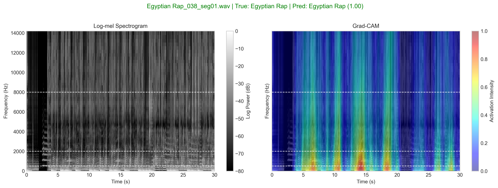
Egyptian Rap
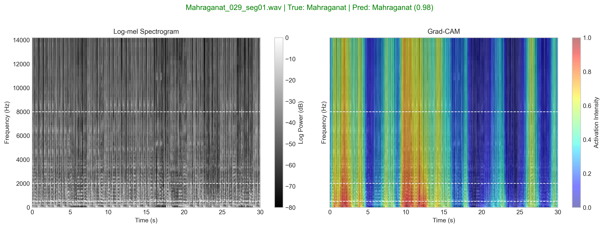
Mahraganat
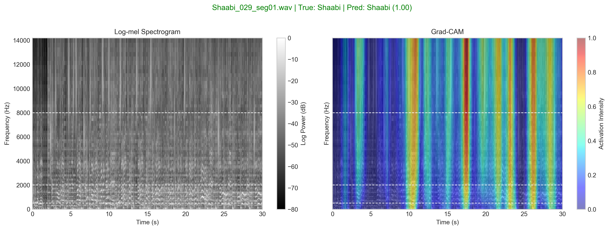
Shaabi
The comparison below shows Grad-CAM heatmaps for misclassified Mahraganat and Shaabi examples, showing how both share common low-frequency activations, sourced by the percussive elements, which is what confuses them both.
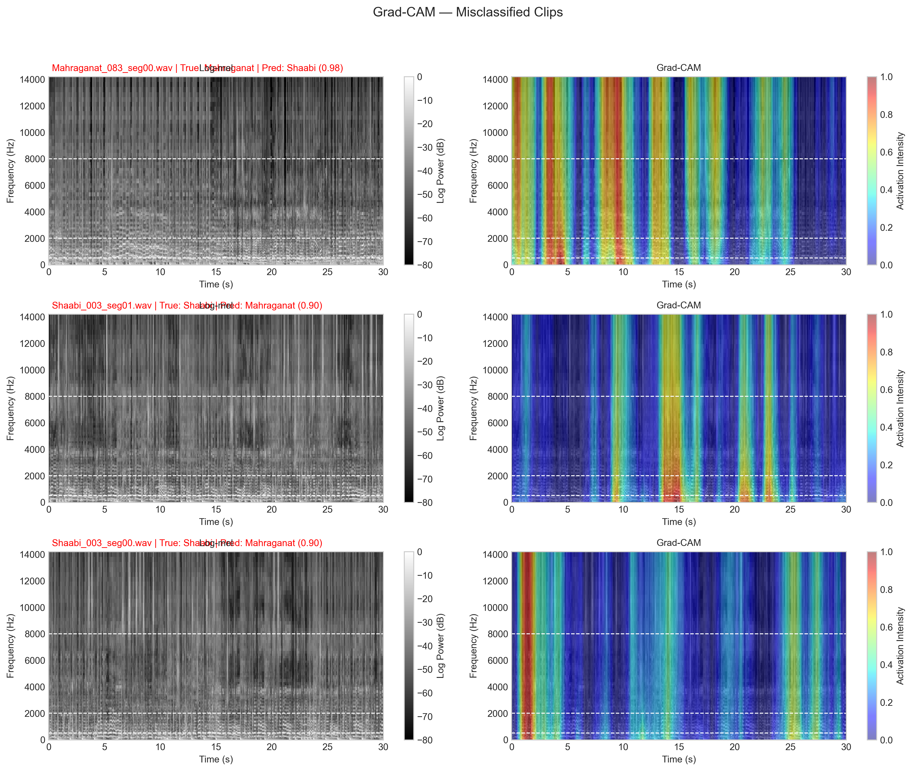
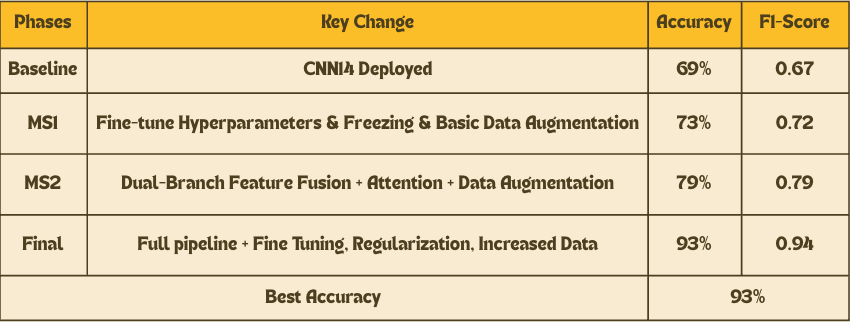
Our final model achieved 93% accuracy and 0.94 macro F1, improving 24 points over the 69% baseline. Tarab/Classical and Egyptian Pop reached perfect classification while Mahraganat and Shaabi remained the hardest classes due to their shared acoustic characteristics as both are Egyptian street music genres. The confusion matrix and training curves are shown below.
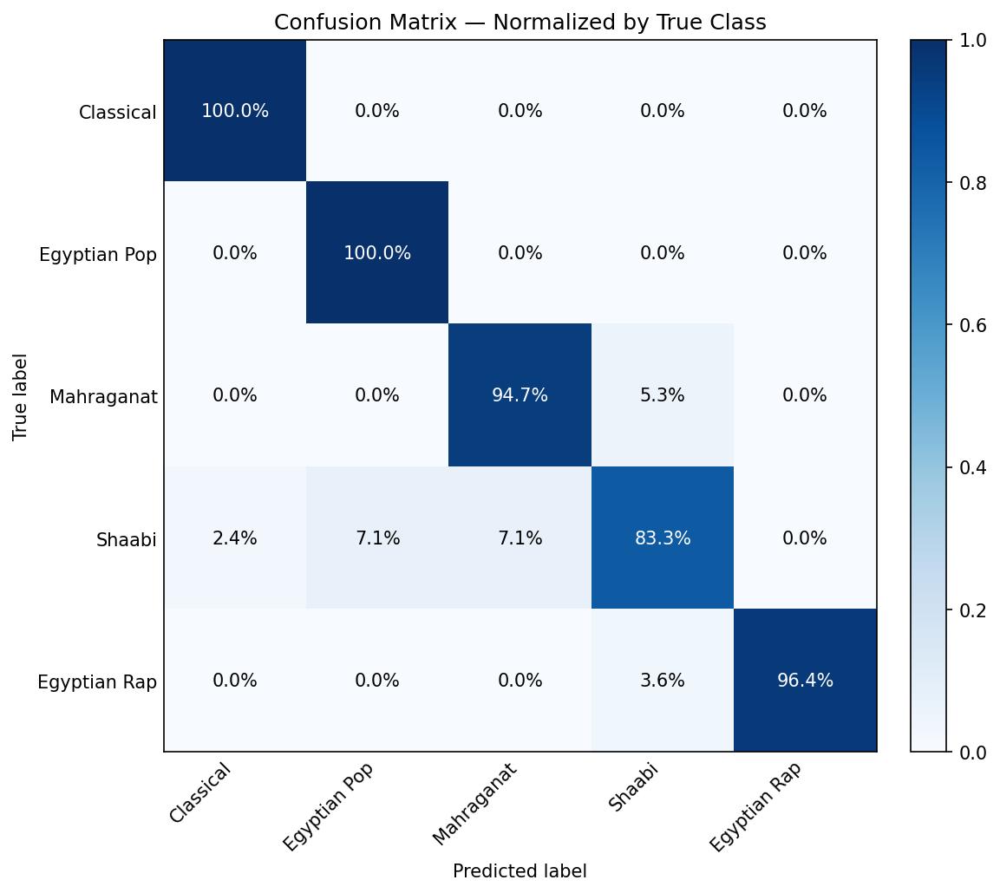
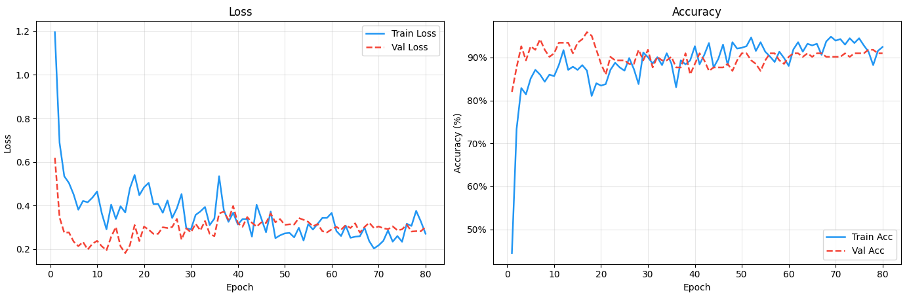
Training and implementation details:
We introduced the first labeled Egyptian music dataset and a culturally-informed deep learning pipeline achieving 93% accuracy and 0.94 macro F1. Our key finding was that culturally-informed hand-crafted features outperformed any single architectural change, and data quality consistently mattered more than model complexity. Grad-CAM confirmed the model learned acoustically meaningful patterns per genre. Future work should target expanding Shaabi and Mahraganat collections, exploring transformer-based audio models like AST which we mentioned earlier, incorporating maqam-specific features, and extending the framework to other underrepresented Arabic music genres.
References used in this project: